The product is a conventional human-powered bicycle consisting of a rigid structural frame, front-fork steering system, two wheel assemblies, pedal-operated drivetrain, braking system, saddle, and associated fasteners and hardware.
General Physical Description
FeatureGeneral Description
Vehicle typeTwo-wheeled, single-rider bicycle
PropulsionHuman-powered pedal and chain drive
SteeringFront fork and handlebar controlled
Drive wheelRear wheel
BrakingRim brake or disc brake, depending on configuration
Frame configurationGenerally rigid diamond-style frame
Primary useTransportation, recreation, exercise, and general road use
TerrainPaved roads and compatible light terrain
General Dimensions and Size
DimensionTypical General Range
Overall length1,700–1,800 mm
Overall height950–1,100 mm
Overall width600–750 mm (set by the handlebar width)
Wheel diameter26–29 in / approximately 660–737 mm
Tire width35–60 mm
Wheelbase1,000–1,100 mm
Crank arm length165–175 mm
Handlebar width600–750 mm
Seatpost diameter27.2–31.6 mm
Ground clearance70–120 mm
Frame sizeApproximately 450–560 mm
Frame size is measuredFrom the center of the bottom bracket to the top of the seat tube
Weight of bicycle10–16 kg
Standover height740–900 mm (top tube height above ground)
Saddle height range700–1,000 mm (ground to top of saddle)
Bottom-bracket height260–300 mm above ground
Bottom-bracket drop55–80 mm below the wheel-axle centerline
Chainstay length420–460 mm
Head-tube angle65°–73°, depending on bicycle type
Seat-tube angle71°–75°
Fork offset (rake)40–50 mm
Front hub width (axle spacing)100 mm
Rear hub width (axle spacing)130–142 mm
Note: Actual dimensions vary according to bicycle type, frame size, wheel size, component selection, and manufacturer design.
Shape and Geometric Configuration
The bike frame uses a front triangle and rear triangle. The front triangle consists of the head tube, top tube, down tube, seat tube, and bottom-bracket region. The rear triangle consists primarily of the chainstays and seatstays extending toward the rear axle.
The head tube supports the steering and headset assembly.
The top tube and down tube connect the head tube to the seat-tube region.
The seat tube supports the seatpost and saddle.
The bottom-bracket shell supports the crank and bottom-bracket assembly.
The chainstays and seatstays locate and support the rear wheel.
The fork supports the front wheel and provides steering.
Frame Specifications and Construction
Frame ElementFunction
Head tubeSupports headset, steerer, and front steering assembly
Top tubeStructural connection between head tube and seat-tube region
Down tubeMajor structural member connecting head tube to bottom-bracket region
Seat tubeSupports seatpost and connects the frame to the bottom-bracket area
ChainstaysTransfer loads between bottom-bracket region and rear axle
SeatstaysSupport the rear triangle and rear axle region
Bottom-bracket shellMounting structure for the bottom-bracket assembly
Common frame materials include aluminum, carbon fiber, steel, and titanium. The actual material and construction may vary.
Materials of Construction
ComponentMaterials
FrameAluminum
ForkAluminum
Handlebar / stemAluminum
RimsAluminum
SpokesStainless steel
HubAluminum body with steel axle/bearings
CrankAluminum
Chain / sprocketsHardened alloy steel
Brake rotorStainless steel
Brake caliperAluminum
Brake padsFriction compound
SeatpostAluminum
Saddle railsSteel
Saddle coverSynthetic leather
TireRubber with textile casing
Inner tubeSynthetic rubber
PedalsAluminum body with steel axle
Headset bearings and cupsSteel
Bottom-bracket cups and bearingsAluminum
ChainringsAluminum alloy
Rim tape and valveRubber rim tape
Spoke nipplesAluminum alloy
DerailleursAluminum body
Shifters and brake leversAluminum
Cable inner wiresStainless
Cable housingSteel coil
Hydraulic hoseBraided reinforced polymer
Brake fluid (hydraulic discs)DOT 4/5.1 glycol fluid
Grips / handlebar tapeRubber
ReflectorsAcrylic
LightsAluminum housing with rechargeable lithium-ion cell
Kickstand, fenders, rackAluminum
FastenersAlloy steel
General Specifications
Note: All sizes, materials and torque values in this manual are typical references for a general adult bicycle. The marking on the actual component, or the component maker's instructions, always takes priority.
Front Fork, Headset, Handlebar, and Stem
The steering assembly consists of the front fork, steerer, headset bearings and retention components, stem, handlebar, and grips or handlebar tape. The headset allows the fork and handlebar to rotate smoothly within the frame.
ComponentGeneral Specification / Description
Handlebar widthApproximately 600–750 mm
Common stem clamp diameter31.8 mm
Typical stem length60–120 mm
HeadsetUpper/lower bearings, seals, compression/retention components, spacers, and top cap
Wheel, Hub, Axle, Rim, and Spoke Specifications
Each wheel assembly consists of a hub, axle, bearings, spokes, rim, tire, and either an inner tube or a tubeless system.
Wheel FeatureGeneral Information
Common wheel sizes26, 27.5, 28, and 29 in
HubSupports axle, bearings, and wheel rotation
SpokesConnect hub to rim and maintain wheel structure
RimSupports tire and interfaces with spokes
Tire systemInner tube or tubeless, depending on design
Tires and Recommended Tire Pressure
The general specification provides a recommended starting pressure range of 45–60 PSI. A general reference is approximately 45–55 PSI for the front tire and 50–60 PSI for the rear tire.
Tire PositionRecommended Starting Pressure
Overall starting range45–60 PSI
Front tireApproximately 45–55 PSI
Rear tireApproximately 50–60 PSI
Note: These values are starting references only. Actual tire pressure must be adjusted according to tire width, rider mass, cargo/load, terrain, riding conditions, and the tire manufacturer's stated pressure range. The tire sidewall/manufacturer maximum must not be exceeded.
EXAMPLE: A 75 kg rider on 38 mm tires might start at about 50 PSI front and 55 PSI rear, then adjust in 2–3 PSI steps. A heavier rider or a loaded rack needs more pressure on the rear tire.
Example ConditionStarting Reference
Rider mass75 kg
Tire width38 mm
Front tire starting pressureAbout 50 PSI
Rear tire starting pressureAbout 55 PSI
Adjustment step2–3 PSI
Heavier rider or loaded rackNeeds more pressure on the rear tire
Drivetrain Specifications
The drivetrain transfers rider input from the pedals to the rear wheel through the crankset, chainring, chain, rear sprocket or cassette, and rear hub.
Power path: Rider → Pedals → Crankset → Chainring → Chain → Rear Sprocket/Cassette → Rear Hub → Rear Wheel.
ComponentGeneral Description
PedalsProvide the rider interface for applying force
Crank armsTransmit pedal force to the chainrings
ChainringsTransfer crank rotation to the chain
Bottom bracketSupports crank rotation within the frame
ChainTransfers rotational force to the rear sprocket
Rear sprocket/cassetteTransfers chain force to the rear hub
Gear-Shifting System
Where equipped with multiple gears, the shifting system may use shift levers, cables and housing, front and/or rear derailleurs, and multiple sprockets. Conventional mechanical shifting uses cable tension to move the derailleur.
Typical rear cassette/freewheel configurations may contain approximately 7–12 sprockets.
Braking System
The bicycle may use rim brakes or disc brakes. Disc brakes may be mechanical or hydraulic. The braking system converts lever input into friction at the rim or brake rotor.
Brake path: Brake Lever → Cable/Hydraulic System → Caliper → Pad → Rim/Rotor → Wheel.
Brake TypeMain Components
Rim brakeBrake lever, cable/housing, caliper, brake arms, pads, and rim braking surface
Mechanical discBrake lever, cable/housing, caliper, pads, rotor, and rotor fasteners
Hydraulic discBrake lever/master cylinder, hydraulic hose, caliper, pads, rotor, and fittings
Saddle and Seatpost
ComponentGeneral Information
Seatpost diameters27.2, 30.9, and 31.6 mm are common sizes
SaddleCover, padding, shell, rails, and rail clamp
Seatpost clampSecures the seatpost to the frame
Note: Actual seatpost diameter must match the frame's specified seat-tube interface.
Capacity and Functional Capability
The bicycle is intended for a single rider. Total load includes the rider, bicycle, accessories, and cargo. A typical adult-bicycle reference may fall around 100–125 kg total load, but the actual permitted capacity is manufacturer- and model-specific and must be verified before use.
Provides human-powered propulsion.
Provides directional control through the handlebar and front fork.
Provides speed reduction and stopping through the braking system.
Provides gear selection where a multi-speed drivetrain is installed.
Fasteners and Retention Components
Important fastening locations include the stem clamp, handlebar clamp, seatpost clamp, brake mounting bolts, rotor bolts or lockring, crank fasteners, axle hardware, and derailleur mounting hardware. Exact fastener sizes, thread specifications, and torque values are model-specific and must be verified against the applicable component instructions.
Bike Components in Groups
GroupAssemblyPrimary Parts / CAD Content
01Frame AssemblyFrame, head tube, top tube, down tube, seat tube, chainstays, seatstays, bottom-bracket shell, frame hardware
02Front Fork AssemblyFork blades, fork crown, steerer, dropout/axle interfaces, fork hardware
03Headset & Steering AssemblyUpper/lower bearings, cups or bearing seats, seals, compression ring, spacers, top cap, retention hardware
04Handlebar & Stem AssemblyStem, handlebar, clamp hardware, grips/tape, plugs
05Front Wheel AssemblyFront hub, axle, bearings, spokes, rim, tire, tube/tubeless components
06Rear Wheel AssemblyRear hub, axle, bearings, spokes, rim, tire, tube/tubeless components
07Crank & Bottom Bracket AssemblyBottom bracket, spindle, crank arms, crank fasteners
08Pedal AssemblyLeft pedal, right pedal, pedal axles, pedal bearings/body
09Front Drivetrain AssemblyCrankset, chainrings, chainring bolts or direct-mount interface
10Rear Drivetrain AssemblyCassette/freewheel, rear hub drive interface, lockring or retaining hardware
11Shifting SystemShift levers, cables, housing, front/rear derailleur, adjustment hardware
12Front Brake AssemblyFront lever/control, cable or hose, caliper, pads, mounting hardware, rotor/rim interface
13Rear Brake AssemblyRear lever/control, cable or hose, caliper, pads, mounting hardware, rotor/rim interface
14Saddle & Seatpost AssemblySaddle, rails, seatpost, saddle clamp, seatpost clamp
15Suspension Assembly (where applicable)Suspension fork or other bicycle suspension components and adjustment hardware
16Accessories & Mounting ComponentsBottle cage, reflectors, rack/fender mounts, kickstand, and other model-specific accessories
17General Fasteners & Retention HardwareBolts, nuts, washers, spacers, clips, lockrings, retaining hardware
18Complete Bicycle AssemblyIntegrated final assembly of all installed groups
List of Materials
Item No.Group-Part No.Part NameQuantitySpecification / SizeNotes
101-01Frame1Model-specific ; 450–560 mm; head tube for 1-1/8 in steererMain structural assembly
201-02Rear dropout / derailleur hanger1Replaceable hanger; model-specificMounts rear derailleur
301-03Frame hardware (bosses, cable guides, stops)1 setM5 bosses; guides as fittedBottle cage, rack and fender mounts
402-01Front Fork1Model-specific ; 1-1/8 in steerer; offset 40–50 mmSteering support
503-01Headset Bearing Set1 setModel-specific ; ZS44 upper, ZS44/EC44 lowerUpper/lower bearing components
603-02Crown race1Fits the 1-1/8 in steererSits on the fork crown
703-03Compression plug / star nut11-1/8 inHolds top-cap preload
803-04Spacer set1 set1-1/8 in inner diameter; 5–20 mm thickSets stem height
903-05Top cap and bolt1 setM6 boltSets headset preload only
1004-01Stem1Model-specific ; 31.8 mm clamp; 60–120 mm lengthHandlebar support
1104-02Handlebar1Model-specific ; 31.8 mm clamp; 600–750 mm widthSteering control
1204-03Grips / handlebar tape1 setGrips 130–135 mm longRider hand contact
1304-04Bar-end plugs2Fit the bar endRequired for safety
1405-01Front Wheel1Model-specific ; 26–29 in; 28–36 spokes; 100 mm hubComplete front wheel
1505-02Front tire135–60 mm wide; size on sidewallRotation arrow forward
1605-03Front inner tube1Matches tire; Presta or Schrader valveNot used on tubeless
1705-04Front rim tape1Width matches rimCovers spoke holes
1805-05Front axle (quick-release or thru-axle)1100 mm; 5 mm QR or 12 mm thru-axleSecures wheel
1905-06Front disc rotor (disc brakes only)1140–203 mm; 6-bolt or Center LockFit before wheel install
2006-01Rear Wheel1Model-specific ; 26–29 in; 28–36 spokes; 130–142 mm hubComplete rear wheel
2106-02Rear tire135–60 mm wide; size on sidewallRotation arrow forward
2206-03Rear inner tube1Matches tire; Presta or Schrader valveNot used on tubeless
2306-04Rear rim tape1Width matches rimCovers spoke holes
2406-05Rear axle (quick-release or thru-axle)1130–135 mm QR or 12 × 142 mm thru-axleSecures wheel
2506-06Rear disc rotor (disc brakes only)1140–203 mm; 6-bolt or Center LockFit before wheel install
2607-01Bottom Bracket1Model-specific ; 68 or 73 mm shell; threaded or press-fitCrank support
2707-02Crankset1Model-specific ; 165–175 mm arms; 32–44T single or 50/34T doubleCrank and chainring assembly
2807-03Crank bolt and dust caps1 setPer crank standardRetains crank arms
2908-01Pedals2Left/right ; 9/16 in × 20 TPIPedal pair
3009-01Chainring bolts / nuts1 setM8 × 0.75 typicalPer chainring count
3110-01Cassette/Freewheel1Model-specific ; 7–12 sprockets; 11–32T to 11–36TRear sprocket system
3210-02Chain11/2 in pitch; width by speed; 100–120 linksChain
3310-03Chain connecting (quick) link1Same speed rating as chainJoins chain ends
3410-04Cassette lockring1Per freehub standardHolds cassette
3511-01Shift Control1 setModel-specific ; click count = sprocket countWhere multi-speed
3611-02Rear derailleur1Same speed rating as cassette
3711-03Front derailleur (where fitted)1Matches chainring countDouble or triple only
3811-04Shift cables and housing1 setWire 1.2 mm; housing 4 mmReplace if frayed
3911-05Housing ferrules and cable end caps1 setFit 4 mm and 5 mm housingStops fraying
4012-01Front Brake1 setModel-specific ; rim or disc; rotor 140–203 mmBrake assembly
4112-02Front brake lever1Matches brake typeControls front brake
4212-03Front brake cable and housing, or hydraulic hose1Per brake typeNo sharp bends
4312-04Front brake pads1 pairOrganic or sintered; shape matches caliperKeep oil-free
4412-05Hydraulic brake fluid (hydraulic only)As neededAs the brake maker specifiesNever mix types
4513-01Rear Brake1 setModel-specific ; rim or disc; rotor 140–203 mmBrake assembly
4613-02Rear brake lever1Matches brake typeControls rear brake
4713-03Rear brake cable and housing, or hydraulic hose1Per brake typeNo sharp bends
4813-04Rear brake pads1 pairOrganic or sintered; shape matches caliperKeep oil-free
4914-01Seatpost127.2–31.6 mm typical ; 300–450 mm long; 0–25 mm setbackVerify actual frame specification
5014-02Saddle1Model-specific ; 130–155 mm wide; 7 mm railsRider support
5114-03Seatpost clamp (seat collar)1Sized to seat tube outside diameter (34.9 mm common)Or quick-release collar
5214-04Dropper (telescopic) seatpost (optional)127.2–31.6 mm; 100–150 mm dropReplaces part 14-01 when fitted
5315-01Suspension fork (where applicable)160–150 mm travelReplaces part 02-01 when fitted
5415-02Rear shock and swingarm pivots (full-suspension only)1 setPer frame makerNot on rigid or hardtail frames
5516-01Front light (white)1USB-rechargeable, 100+ lumensFor night riding
5616-02Rear light (red)1USB-rechargeable, steady/flashFor night riding
5716-03Reflector set1 setWhite front, red rear, amber pedal and wheel reflectorsFit per local rules
5816-04Bell1Clamps to a 22.2 mm barAudible warning
5916-05Bottle cage1M5 bolts, 64–74 mm bolt spacingOptional
6016-06Kickstand1Length matched to wheel sizeOptional
6116-07Fenders1 setWidth 5 mm over tire widthOptional
6217-01Fastener set (bolts, nuts, washers, clips)1 setM5, M6, M8Torque
6317-02Thread-locker, grease, carbon assembly pasteAs neededAs the component maker specifiesDo not mix types
6418-01Complete bicycle1Frame size 450–560 mmFinal assembly and test
ASSEMBLY PROCEDURES
Note: Assembly should be performed using clean components, correct tools, compatible parts, and the manufacturer's specified torque values where available. Do not force components that do not fit correctly.
CAUTION: Do not use incompatible components.
Required Tools
Hex/Allen key set appropriate to the component fasteners.
Torque wrench covering the required component torque range.
Open-end or pedal wrench where applicable.
Adjustable or component-specific wrench for axle, cassette, or bottom-bracket interfaces as required.
Tire levers and a suitable pump.
Chain tool and drivetrain tools where required.
Brake and shifting adjustment tools appropriate to the installed system.
Clean cloths and approved bicycle grease/lubricants.
Frame Preparation
Inspect the frame for damage, cracks, deformation, contamination, and damaged threads.
Confirm that all mounting interfaces are clean and compatible with the intended components.
Verify the frame size and component compatibility before assembly.
Check the bottom-bracket shell, headset interfaces, axle interfaces, brake mounts, and derailleur mounts. Fork and Headset Installation
Install the lower headset components in the correct orientation.
Insert the fork steerer through the head tube and headset components.
Fork and Headset Installation
Install the lower headset components in the correct orientation.
Insert the fork steerer through the head tube and headset components. Install upper headset bearings, compression components, and spacers in the specified order.
Install the stem and top-cap assembly.
Adjust headset preload until steering is smooth and free of excessive play.
Align the handlebar/stem assembly with the front wheel before final tightening.
Handlebar and Stem Installation
Position the handlebar centrally in the stem clamp.
Install clamp hardware evenly and progressively.
Set the handlebar angle and control position appropriate to the bicycle design.
Secure the stem to the steerer using the specified tightening sequence and torque.
Install upper headset bearings, compression components, and spacers in the specified order.
Install the stem and top-cap assembly.
Adjust headset preload until steering is smooth and free of excessive play.
Align the handlebar/stem assembly with the front wheel before final tightening.
Handlebar and Stem Installation
Position the handlebar centrally in the stem clamp.
Install clamp hardware evenly and progressively.
Set the handlebar angle and control position appropriate to the bicycle design.
Secure the stem to the steerer using the specified tightening sequence and torque. Wheel Installation
Inspect both wheel assemblies before installation.
Confirm correct front/rear wheel orientation.
Wheel Installation
Inspect both wheel assemblies before installation.
Confirm correct front/rear wheel orientation.
 Install the axle or quick-release system and secure the wheel fully.
Confirm that the wheel is centered and rotates freely.
Check tire pressure and verify that the tire is seated correctly.
Crank and Bottom-Bracket Installation
Install the correct bottom-bracket type for the frame and crankset.
Install crank components in the correct left/right orientation.
Secure crank fasteners using the applicable manufacturer torque specification.
Rotate the crank by hand to confirm smooth movement and absence of binding.
Install the axle or quick-release system and secure the wheel fully.
Confirm that the wheel is centered and rotates freely.
Check tire pressure and verify that the tire is seated correctly.
Crank and Bottom-Bracket Installation
Install the correct bottom-bracket type for the frame and crankset.
Install crank components in the correct left/right orientation.
Secure crank fasteners using the applicable manufacturer torque specification.
Rotate the crank by hand to confirm smooth movement and absence of binding. Pedal Installation
Identify the left and right pedals.
Apply appropriate grease to pedal threads unless the component manufacturer specifies otherwise.
Install each pedal into its matching crank arm using the correct thread direction.
Secure pedals to the specified torque.
Drivetrain Installation
Install chainrings and crankset components according to their orientation.
Pedal Installation
Identify the left and right pedals.
Apply appropriate grease to pedal threads unless the component manufacturer specifies otherwise.
Install each pedal into its matching crank arm using the correct thread direction.
Secure pedals to the specified torque.
Drivetrain Installation
Install chainrings and crankset components according to their orientation. Install the rear cassette/freewheel using the correct compatible hub interface.
Install the rear cassette/freewheel using the correct compatible hub interface. Install the chain at the correct length and route it through the drivetrain.
Install and adjust the rear and/or front derailleur where applicable.
Set limit positions, cable tension, and shifting alignment.
Brake Installation
Install the front and rear brake assemblies.
Route cables/housing or hydraulic hoses without sharp bends, excessive slack, or interference.
Install brake pads and verify correct alignment.
Install rotors where disc brakes are used and secure them using the applicable retaining system.
Adjust brake engagement and verify that the wheel remains free of unwanted brake contact when released.
Saddle and Seatpost Installation
Insert the seatpost to a safe insertion depth and within the frame's minimum-insertion requirement.
Install and align the saddle on the seatpost clamp.
Set saddle height and angle according to the intended riding position.
Secure the seatpost and saddle-clamp hardware to the specified torque.
Install the chain at the correct length and route it through the drivetrain.
Install and adjust the rear and/or front derailleur where applicable.
Set limit positions, cable tension, and shifting alignment.
Brake Installation
Install the front and rear brake assemblies.
Route cables/housing or hydraulic hoses without sharp bends, excessive slack, or interference.
Install brake pads and verify correct alignment.
Install rotors where disc brakes are used and secure them using the applicable retaining system.
Adjust brake engagement and verify that the wheel remains free of unwanted brake contact when released.
Saddle and Seatpost Installation
Insert the seatpost to a safe insertion depth and within the frame's minimum-insertion requirement.
Install and align the saddle on the seatpost clamp.
Set saddle height and angle according to the intended riding position.
Secure the seatpost and saddle-clamp hardware to the specified torque. Suspension Installation — Where Applicable
Install the suspension component according to its specific manufacturer instructions.
Confirm correct orientation and axle interface.
Set initial adjustment values only according to the applicable component specifications.
Check that suspension movement is smooth and free from abnormal interference.
Suspension Installation — Where Applicable
Install the suspension component according to its specific manufacturer instructions.
Confirm correct orientation and axle interface.
Set initial adjustment values only according to the applicable component specifications.
Check that suspension movement is smooth and free from abnormal interference. Cable and Hose Routing
Route brake and shift cables/housing along the intended frame paths.
Cable and Hose Routing
Route brake and shift cables/housing along the intended frame paths. Secure routing so that it does not contact moving wheels, tires, chains, or crank components.
Secure routing so that it does not contact moving wheels, tires, chains, or crank components. Prevent excessive bending, rubbing, pinching, or interference at the steering area.
Confirm that full handlebar movement does not pull or bind cables and hoses.
Final Assembly Inspection
Check all major fasteners and retention systems.
Prevent excessive bending, rubbing, pinching, or interference at the steering area.
Confirm that full handlebar movement does not pull or bind cables and hoses.
Final Assembly Inspection
Check all major fasteners and retention systems. Verify steering movement and headset adjustment.
Verify front and rear wheel security.
Check crank and pedal installation.
Check shifting operation where applicable.
Check front and rear brake operation.
Check tire pressure and tire seating.
Perform a controlled low-speed functional test before normal use.
Verify steering movement and headset adjustment.
Verify front and rear wheel security.
Check crank and pedal installation.
Check shifting operation where applicable.
Check front and rear brake operation.
Check tire pressure and tire seating.
Perform a controlled low-speed functional test before normal use. MAINTENANCE AND INSPECTION
Pre-Ride Inspection
Inspection AreaCheck
TiresPressure, cuts, excessive wear, bulges, correct seating
WheelsSecurity, alignment, damage, unusual play
BrakesLever operation, pad/rotor or rim condition, stopping response
SteeringHeadset play, smooth rotation, stem/handlebar security
DrivetrainChain condition, lubrication, shifting function
Crank/PedalsLoose movement, damage, secure attachment
Saddle/SeatpostHeight, alignment, clamp security
Frame/ForkCracks, bends, impact damage, loose components
Component Maintenance Matrix
ComponentRoutine MaintenanceInspection / Replacement Indicator
FrameClean and inspectCracks, deformation, impact damage, corrosion
ForkClean and inspectDamage, abnormal movement, corrosion, looseness
HeadsetClean and check adjustmentPlay, roughness, binding, damaged bearings
WheelsClean, check security and alignmentLoose spokes, rim damage, bearing play, severe trueness issue
TiresMaintain pressure and inspect surfaceCuts, cracks, exposed casing, excessive wear
ChainClean and lubricate as appropriateExcessive wear, stiffness, corrosion
Cassette/freewheelClean and inspectWorn or damaged sprocket teeth
Brake padsInspect and cleanExcessive wear, contamination, damage
Brake rotor/rimClean and inspectDamage, excessive wear, contamination
Cables/housingInspect and cleanFraying, corrosion, kinking, damaged housing
Saddle/seatpostClean and check clampDamage, slipping, cracked components
PedalsClean and inspectLoose bearings, damaged body/axle, abnormal play
Maintenance Schedule
IntervalRecommended Maintenance
Before every rideTires, brakes, wheel security, steering, drivetrain, frame/fork visual inspection
RegularlyClean bicycle, inspect chain and drivetrain, check fasteners and tire condition
As neededLubricate chain, adjust brakes and shifting, correct tire pressure
Periodic serviceInspect headset, hubs, bottom bracket, cables/housing, brake system, and wheel condition
After impact or abnormal eventStop use and inspect frame, fork, wheels, steering, brakes, and drivetrain before riding again
Troubleshooting
SymptomLikely causeFix
Chain skips under loadWorn chain or cassette, poor indexingAdjust barrel adjuster; replace worn chain or cassette
Slow or noisy shiftingDirty or stretched cable, bent derailleur hangerClean and re-index; check or replace the hanger
Chain falls offLimit screws wrong, chain too longSet limit screws; check chain length
Weak brakesWorn or oily pads, misaligned caliperReplace or clean pads; realign caliper
Spongy hydraulic leverAir in the systemHave the brake bled
Squealing disc brakeContaminated pads or rotorClean with isopropyl alcohol; replace pads and bed in
Brake rubsWheel not centered, bent rotor or rimRe-seat wheel; realign caliper; true rotor or wheel
Loose or knocking steeringHeadset preload looseAdjust preload; re-tighten stem bolts
Wobbling wheelLoose spokes or bent rimHave the wheel trued
Repeated flat tireThorn in tire, rim tape out of place, low pressureInspect tire inside; refit rim tape; correct pressure
Creaking when pedalingDry bottom bracket, pedals, crank bolt or seatpostClean, grease and re-torque
Saddle slips downSeatpost clamp loose or dryClean and re-tighten to torque; use assembly paste
Stages of Diagnostics (Denton T., 2012)
StageAction
VerifyIs there actually a problem, can you confirm the symptoms?
CollectGet further information about the problem, by observation and research.
EvaluateStop and think about the evidence.
TestCarry out further tests in a logical sequence.
RectifyFix the problem.
CheckMake sure all systems now work correctly.
Inspection Criteria
No visible cracks, major dents, structural deformation, or severe corrosion in the frame or fork.
No excessive bearing play in the headset, hubs, bottom bracket, or pedals.
Wheels are securely mounted and reasonably true for safe operation.
Brakes engage predictably and release without abnormal drag.
Chain and drivetrain components move smoothly and are free of severe corrosion or damage.
All critical fasteners are secure and tightened according to verified specifications.
Tires are properly seated and within the applicable pressure range.
Caution: Do not ride your bicycle if it does not meet any of these points! A faulty bicycle may cause serious accidents!
Lubrication and Consumables
ItemGeneral Practice
Chain lubricantUse a bicycle-appropriate chain lubricant suitable for the riding environment
GreaseUse bicycle-compatible grease on applicable threaded/metal interfaces where specified
Assembly compoundUse only where appropriate to the material and manufacturer instructions
Carbon componentsUse carbon assembly paste where specifically required; do not substitute ordinary grease where prohibited
Cleaning agentUse a bicycle-safe cleaner and avoid contaminating brake pads, rotors, or braking surfaces
Cleaning and Lubrication Routine
Remove dust and mud with a damp sponge and a mild, neutral cleaner.
Wash plastic parts with soapy water only; clean tires with soapy water and a soft brush.
Dry the bicycle with a soft cloth.
Do not use pressure washers or steam cleaners; they push water into bearings.
Washing removes chain lubricant, so inspect the links afterward and lubricate the chain again. Wipe off the excess, because extra lubricant attracts dirt and speeds up wear.
Keep lubricant away from brake rotors, pads and rims.
Tightening Torques
The tightening torques are very important when mounting the different parts of the bicycle. Failing to apply the correct tightening torque may cause an accident. Moreover, the fault may not be covered by warranty. Therefore, all parts must indicate the tightening torque of the bolts.
MAINTENANCE AND INSPECTION
Pre-Ride Inspection
Inspection AreaCheck
TiresPressure, cuts, excessive wear, bulges, correct seating
WheelsSecurity, alignment, damage, unusual play
BrakesLever operation, pad/rotor or rim condition, stopping response
SteeringHeadset play, smooth rotation, stem/handlebar security
DrivetrainChain condition, lubrication, shifting function
Crank/PedalsLoose movement, damage, secure attachment
Saddle/SeatpostHeight, alignment, clamp security
Frame/ForkCracks, bends, impact damage, loose components
Component Maintenance Matrix
ComponentRoutine MaintenanceInspection / Replacement Indicator
FrameClean and inspectCracks, deformation, impact damage, corrosion
ForkClean and inspectDamage, abnormal movement, corrosion, looseness
HeadsetClean and check adjustmentPlay, roughness, binding, damaged bearings
WheelsClean, check security and alignmentLoose spokes, rim damage, bearing play, severe trueness issue
TiresMaintain pressure and inspect surfaceCuts, cracks, exposed casing, excessive wear
ChainClean and lubricate as appropriateExcessive wear, stiffness, corrosion
Cassette/freewheelClean and inspectWorn or damaged sprocket teeth
Brake padsInspect and cleanExcessive wear, contamination, damage
Brake rotor/rimClean and inspectDamage, excessive wear, contamination
Cables/housingInspect and cleanFraying, corrosion, kinking, damaged housing
Saddle/seatpostClean and check clampDamage, slipping, cracked components
PedalsClean and inspectLoose bearings, damaged body/axle, abnormal play
Maintenance Schedule
IntervalRecommended Maintenance
Before every rideTires, brakes, wheel security, steering, drivetrain, frame/fork visual inspection
RegularlyClean bicycle, inspect chain and drivetrain, check fasteners and tire condition
As neededLubricate chain, adjust brakes and shifting, correct tire pressure
Periodic serviceInspect headset, hubs, bottom bracket, cables/housing, brake system, and wheel condition
After impact or abnormal eventStop use and inspect frame, fork, wheels, steering, brakes, and drivetrain before riding again
Troubleshooting
SymptomLikely causeFix
Chain skips under loadWorn chain or cassette, poor indexingAdjust barrel adjuster; replace worn chain or cassette
Slow or noisy shiftingDirty or stretched cable, bent derailleur hangerClean and re-index; check or replace the hanger
Chain falls offLimit screws wrong, chain too longSet limit screws; check chain length
Weak brakesWorn or oily pads, misaligned caliperReplace or clean pads; realign caliper
Spongy hydraulic leverAir in the systemHave the brake bled
Squealing disc brakeContaminated pads or rotorClean with isopropyl alcohol; replace pads and bed in
Brake rubsWheel not centered, bent rotor or rimRe-seat wheel; realign caliper; true rotor or wheel
Loose or knocking steeringHeadset preload looseAdjust preload; re-tighten stem bolts
Wobbling wheelLoose spokes or bent rimHave the wheel trued
Repeated flat tireThorn in tire, rim tape out of place, low pressureInspect tire inside; refit rim tape; correct pressure
Creaking when pedalingDry bottom bracket, pedals, crank bolt or seatpostClean, grease and re-torque
Saddle slips downSeatpost clamp loose or dryClean and re-tighten to torque; use assembly paste
Stages of Diagnostics (Denton T., 2012)
StageAction
VerifyIs there actually a problem, can you confirm the symptoms?
CollectGet further information about the problem, by observation and research.
EvaluateStop and think about the evidence.
TestCarry out further tests in a logical sequence.
RectifyFix the problem.
CheckMake sure all systems now work correctly.
Inspection Criteria
No visible cracks, major dents, structural deformation, or severe corrosion in the frame or fork.
No excessive bearing play in the headset, hubs, bottom bracket, or pedals.
Wheels are securely mounted and reasonably true for safe operation.
Brakes engage predictably and release without abnormal drag.
Chain and drivetrain components move smoothly and are free of severe corrosion or damage.
All critical fasteners are secure and tightened according to verified specifications.
Tires are properly seated and within the applicable pressure range.
Caution: Do not ride your bicycle if it does not meet any of these points! A faulty bicycle may cause serious accidents!
Lubrication and Consumables
ItemGeneral Practice
Chain lubricantUse a bicycle-appropriate chain lubricant suitable for the riding environment
GreaseUse bicycle-compatible grease on applicable threaded/metal interfaces where specified
Assembly compoundUse only where appropriate to the material and manufacturer instructions
Carbon componentsUse carbon assembly paste where specifically required; do not substitute ordinary grease where prohibited
Cleaning agentUse a bicycle-safe cleaner and avoid contaminating brake pads, rotors, or braking surfaces
Cleaning and Lubrication Routine
Remove dust and mud with a damp sponge and a mild, neutral cleaner.
Wash plastic parts with soapy water only; clean tires with soapy water and a soft brush.
Dry the bicycle with a soft cloth.
Do not use pressure washers or steam cleaners; they push water into bearings.
Washing removes chain lubricant, so inspect the links afterward and lubricate the chain again. Wipe off the excess, because extra lubricant attracts dirt and speeds up wear.
Keep lubricant away from brake rotors, pads and rims.
Tightening Torques
The tightening torques are very important when mounting the different parts of the bicycle. Failing to apply the correct tightening torque may cause an accident. Moreover, the fault may not be covered by warranty. Therefore, all parts must indicate the tightening torque of the bolts.
Safety
LED Lights (Front and Rear) are essential safety accessories used to illuminate paths and ensure visibility in low light or nighttime conditions.
Made from hard plastics, silicone or aluminum.
Usually mounted onto the handlebars or front fork, while rear lights usually attach from the seatpost, seatstays, or back helmet.
Preferred Bike: All bikes
Bicycle Bells and Horns are audible signaling devices used to warn or alert pedestrians, other cyclists and motorists present in the path.
Made from brass, aluminum, steel or durable plastics.
Attach directly on the bicycle handlebars or near the handlebar grips for easy thumb reach.
Preferred Bikes: Commuter/City Bike, Hybrid Bike, Road Bike (urban use)
Safety & Apparel (Helmet, Cycling Gloves, Padded Short, Reflective Safety Vest)
It is usually worn by a rider to protect the head from impact, prevent hand numbness and road rash, reduce friction and saddle soreness on long ride.
Preferred: All bike types
Rearview Mirrors are designed to give riders a clear view of traffic and surroundings behind them without requiring them to turn their head, which enhance the situational awareness and safety.
Made from durable plastics, lightweight aluminum, or stainless steel stems, featuring convex glass or shatter-resistant acrylic mirrors.
Usually mount to the ends of handlebars, handlebar grips or on the riders helmet or glasses.
Preferred Bikes: Commuter/City Bikes, Road Bikes, and Hybrid Bikes (especially for riding in busy traffic or urban environments).
Storage & Carrying
Rear Rack is a sturdy metal or carbon platform mounted over a bicycle rear wheel.
Designed to hold cargo, strap down bags or support panniers for commuting touring and carrying everyday items.
Prefer Bikes: Commuter/City Bikes, Touring Bikes, Gravel Bikes, and Hybrid Bikes.
Front Pannier Rack it is a specialized cargo rack mounted over the front wheel where it made of sturdy, lightweight materials such as aluminum, chromoly steel or carbon fiber.
It is used to securely hold pannier bags and serve as weight to the front wheels making it ideal for carrying gear during bike touring, commuting and long distance travel.
Prefer Bikes: touring, commuting/city bikes, hybrid bikes, and gravel bikes.
Cargo & Family Transport (Customized Cart) designed to haul extra loads, gear, groceries or passengers.
Typically constructed from sturdy tubular steel or aluminum framing, heavy-duty weather-resistant fabric (like canvas or polyester), and reinforced plastic or wooden base panels with pneumatic wheels.
It mounts to the bicycle using a specialized hitch mechanism that securely connects to the rear axle, chainstay, or seatpost of the towing bike.
Preferred Bikes: Commuter/City Bikes, Hybrid Bikes, and Utility/Cargo Bikes (primarily used in urban and neighborhood environments).
Rear Packs and Pannier Bags are cargo containers made from leathers, fabric and other materials that are durable for water resistance.
They are typically installed in bicycle racks which are installed in the rear wheels or sometimes in front pannier racks.
It is a storage accessory designed for commuting, grocery and everyday travel.
Prefer Bikes: Commuter/City Bike, hybrid Bike, Gravel Bike
Front Bike Basket a convenient front mounted storage accessory designed to hold daily items easy to reach.
Made from welded steel wire, durable plastics, aluminum, or woven natural materials like wicker/rattan with leather or plastic straps.
Attaches directly to bicycle handlebars, front fork or head tube to ensure stability when steering.
Preferred Bikes: Commuter/City Bikes, Hybrid Bikes, and Cruiser Bikes.
Frame / Top Tube Bags, compact storage bags that mount directly onto the bicycle frame's top tube or front triangle, to store smaller essentials.
Typically constructed from durable, water-resistant or waterproof fabrics (such as high-denier nylon, cordura, or laminated polyester) with waterproof zippers.
They strap or bolt directly onto the bicycle's top tube and head tube, resting right in front of the saddle or behind the stem.
Preferred / Compatible Bikes: Gravel Bikes, Mountain Bikes, and Road Bikes.
Comfort & Performance
Cycling Computers / GPS Mounts are an accessory that serve as an electronic tracking device on a bicycle.
Made from durable lightweight materials such as hard plastics or aluminum, usually mounted directly to the bicycle handlebars or stem.
To track speed, distance travel, navigation and riding metrics suited for training, travel, long rides, and trail exploration.
Prefer Bikes: Road Bikes, Gravel Bikes, Mountain Bikes, and Hybrid Bikes
Upgraded Pedals (Flat, Clipless, or Hybrid) enhancing driving performance by improving the grip, and foot stability depending on riding style making the pedals more efficient.
Made from durable materials such as forged aluminum, magnesium, carbon fiber composites, or reinforced nylon bodies with chromoly steel axles.
Attach directly into the ends of the bicycle's crank arms (right and left sides).
Preferred / Compatible Bikes: Road Bikes, Mountain Bikes, Gravel Bikes, and Hybrid Bikes.
Suspension Seatpost or Upgraded Forks serve as mechanical shock-absorption components designed to smooth out rough rides.
Typically constructed from high aluminum alloy, carbon fiber, steel springs or fluid/air dampers.
Suspension Seatpost replaces the standard bicycle seatpost and attach directly to the frames seat tube holding the saddle.
Upgraded Forks replace the front fork, attaching the front wheel assembly to the bike’s head tube.
Preferred Bike: Mountain Bikes, Gravel Bikes, and Hybrid Bike
Water Bottle Cages is an accessory holder designed to keep hydration readily accessible during riding.
It is usually made from aluminum, plastic, steel or carbon fiber.
It mounts directly to the threaded eyelets on the bicycle frame commonly in the down tube, seat tube or underneath the down tube.
Preferred Bike: All Bike types.
Smartphone mounts it is a holder designed to keep phone visible and accessible while riding.
Made from durable plastics, silicone grips or aluminum.
It typically attaches to the bicycle handlebar or stem.
Typically preferred and used for Commuter/City Bike, Hybrid Bike, Road Bike for (urban use)
Handlebar Tape / Bar Grips are outer coverings applied directly to bicycle handlebars to provide a secure and comfortable handhold.
Bar Grips: Typically made from rubber, silicone, or foam compounds (common on flat handlebars).
Handlebar Tape: Usually made from cork, synthetic leather, polyurethane (PU), EVA foam, or microfibre (common on drop handlebars).
It wraps around or slides onto bicycle handlebars (grips slide onto the ends of flat bars, while tape is wrapped tightly along drop bars).
Preferred / Compatible Bikes: All Bike Types (bar grips are common on mountain, hybrid, and commuter bikes; handlebar tape is standard on road, gravel, and touring drop-bar bikes).
Kickstands a mechanical supporting device attached to a bicycle to keep it upright when parked.
It typically made from metals such as aluminum, steel or carbon steel composites.
Mount directly to the bike frame, either behind the bottom bracket (center-mount kickstands) or near the rear left dropout (rear-mount/chainstay kickstands).
Preferred Bikes: Commuter/City Bike, Hybrid Bike, Road Bike (urban use)
Maintenance & Repair
Minipumps and flat tire repair kits are portable emergency toolkits used to fix punctured tires and inflate while out on a ride.
Repair kits contains vulcanizing rubber patches, metal or plastic scuffers/rasps, rubber cement, or pre-glued patch units, along with compact tire levers.
Preferred Bikes: All bikes
Maintenance tools (such as multi-tools, chain breakers, tyre levers, and pocket wrenches) are portable hardware instruments used for routine adjustments, minor repairs, and component tuning while out on a ride or at home.
Made from hardened chrome-vanadium steel, stainless steel, or durable aluminum bodies with integrated tool bits.
They are attached or carried directly inside a saddlebag or any containers available in a modified bike.
Preferred Bike: All bikes
Security & Protection
Fenders (Mudguards) is a protective curved pieces made in plastic, aluminum, or steel that attach over the front and rear wheels mounted to the bicycle frame.
It is used to block waters, mud and road debris.
Built in standard for commuter bikes and also commonly added to road, gravel and hybrid bikes for all weather riding.
Mud Flaps is an extensions made from rubber, leather, or soft plastic bolted or zipped that attach to the bottom of the fenders.
It is used to extend fender coverage to block extra spray and protect our feet, the drivetrain and trailing rides.
Same Preference as Fenders
Bike Lock (U Lock and Cable Locks) it is a security device used to safeguard the bike against theft when left unattended.
Made from hardened carbon steel, or silicone protective coatings.
Carried in a backpack or mounted directly to the bike frame using a specialized mounting bracket, or wrapped around the seatpost.
Preferred Bikes: Commuter/City Bike, Hybrid Bike, Road Bike (urban use)
Bicycle Covers are protective enclosures designed to shield a stored bicycle from environmental elements.
Made from durable, waterproof, UV-resistant, and tear-proof synthetic fabrics like heavy-duty polyester, nylon, or Oxford cloth.
It often used to be draped completely over the parked or stored bicycle, often featuring an elastic hem, drawstrings, or buckled straps at the bottom to secure it tightly around the wheels and frame against wind.
Preferred / Compatible Bikes: All Bike Types.
Chainstay Protectors are protective guards designed to shield the bicycle frame from damage caused by the chain.
Typically constructed from durable, shock-absorbing materials such as neoprene, rubber, leather, silicone, or tough plastic wraps.
They wrap around or strap directly onto the right-hand (drive-side) chainstay of the bicycle frame, right beneath the chain.
Preferred / Compatible Bikes: Mountain Bikes, Gravel Bikes, and Road Bikes.
Accessories by Category
Safety
LED Lights (Front and Rear)
Bicycle Bells and Horns
Safety & Apparel
Rearview Mirrors 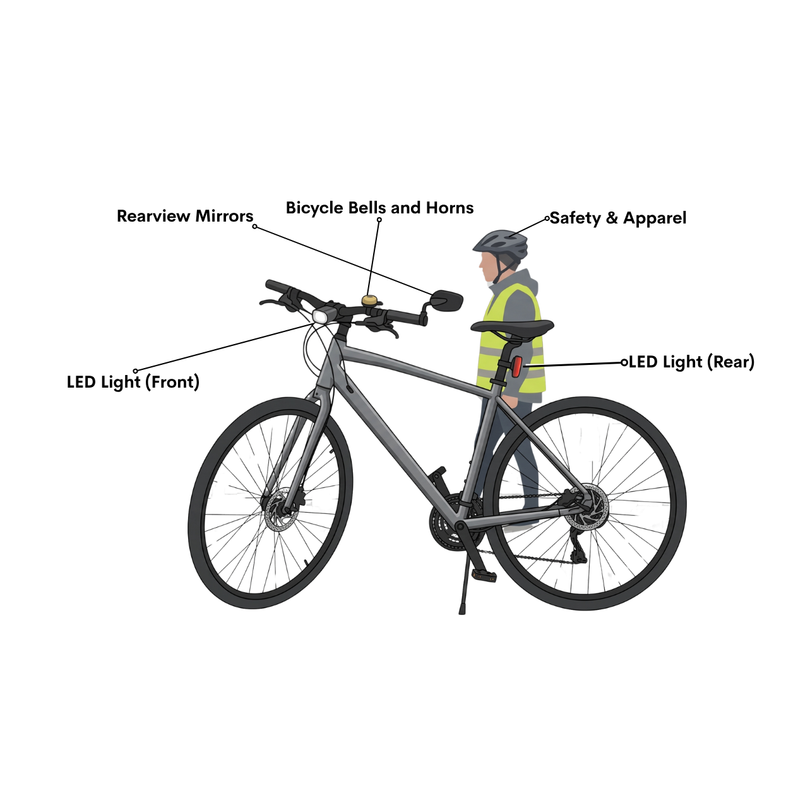 Comfort & Performance
Cycling Computers / GPS Mounts
Upgraded Pedals
Suspension Seatpost or Upgraded Forks
Water Bottle Cages
Smartphone mounts
Handlebar Tape / Bar Grips
Kickstands
Comfort & Performance
Cycling Computers / GPS Mounts
Upgraded Pedals
Suspension Seatpost or Upgraded Forks
Water Bottle Cages
Smartphone mounts
Handlebar Tape / Bar Grips
Kickstands Maintenance & Repair
Minipumps and flat tire repair kits contain vulcanizing rubber patches, metal or plastic scuffers/rasps, rubber cement, or pre-glued patch units, along with compact tire levers.
Maintenance tools (such as multi-tools, chain breakers, tyre levers, and pocket wrenches)
Maintenance & Repair
Minipumps and flat tire repair kits contain vulcanizing rubber patches, metal or plastic scuffers/rasps, rubber cement, or pre-glued patch units, along with compact tire levers.
Maintenance tools (such as multi-tools, chain breakers, tyre levers, and pocket wrenches) Security & Protection
Fenders (Mudguards)
Mud Flaps
Bike Lock (U Lock and Cable Locks)
Bicycle Covers
Chainstay Protectors
Security & Protection
Fenders (Mudguards)
Mud Flaps
Bike Lock (U Lock and Cable Locks)
Bicycle Covers
Chainstay Protectors
This section covers the warranty that the buyers will be provided and the conditions as follows: Statutory Warranty The statutory warranty is a standard support that the buyers will get for buying a bicycle. This includes free of charge repair, replacement, and refund for one year. This is to comply with Article 68 of the Consumer Act of the Philippines (R.A. 7394). To qualify, the following conditions must be met: The defective bike or parts must undergo an inspection by the Technical Service. Any defects or broken parts must not be due to improper use of the bicycle, use for competitions, use of non-recommended accessories, or incorrect maintenance work by unauthorized personnel. If a warranty repair fails to restore the bicycle to its peak working condition, the buyer is entitled to a replacement part of equal quality or a full refund for the damaged item. The warranty period for repaired components or replaced items will be renewed from the date the service is completed. Any claim against this statutory warranty must be filed within one year from the date of purchase. All warranty claims must be processed by an authorised retailer.
Riding a bike requires balance, composure, and a focused mind. It is not just about maintaining the pace for each pedal or being comfortable when riding. Because there are things on the road that a rider should be accountable and consider such as road signs, traffic lights, consistent maintenance of parts, and road hazards. Therefore, proper care in bike handling is a must while also making sure that all rules and regulations on the road are followed. With that, the road hazards are the following:
A flat tire might be due to a puncture, bruise, or break. 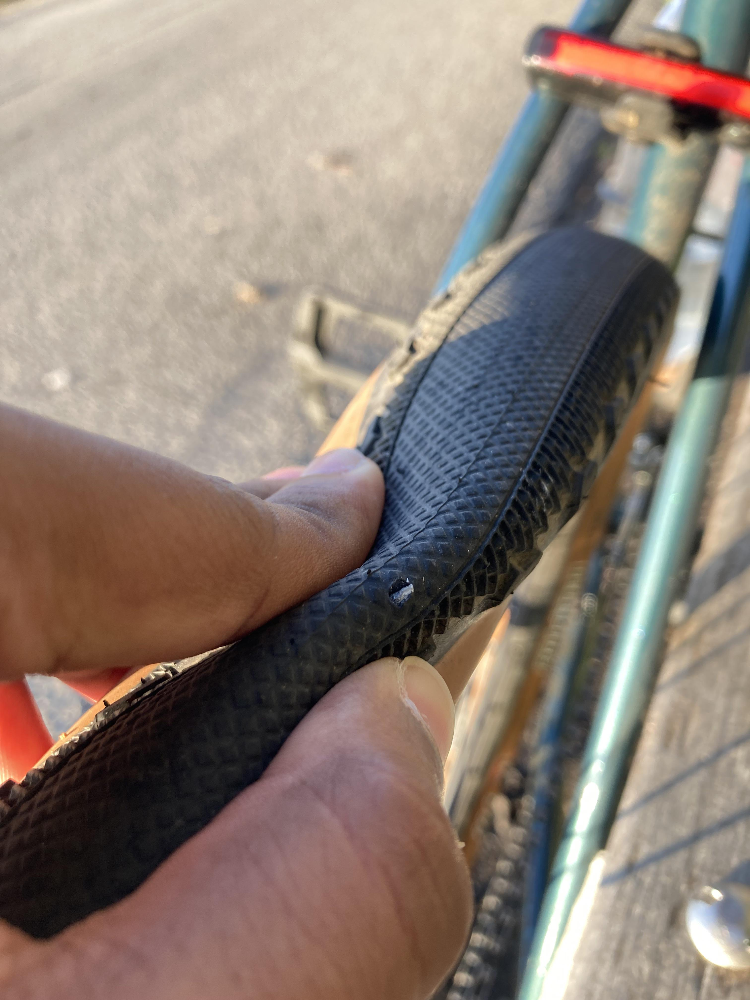 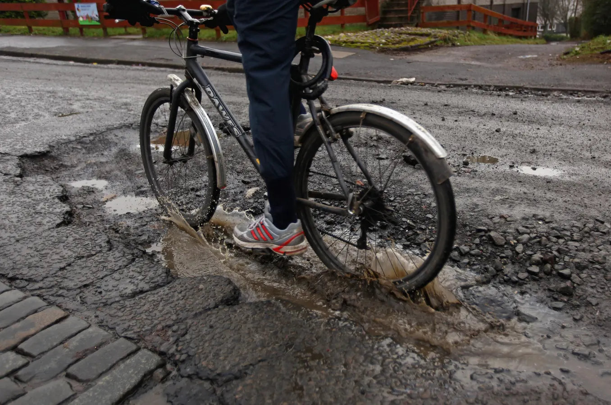 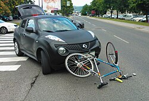 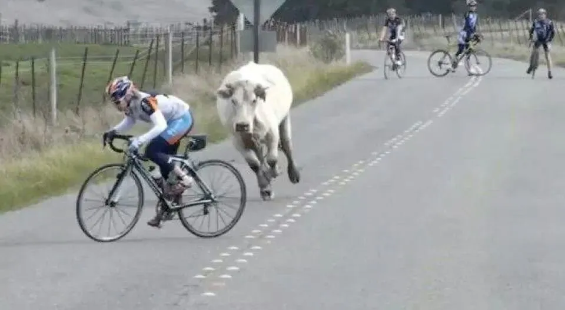 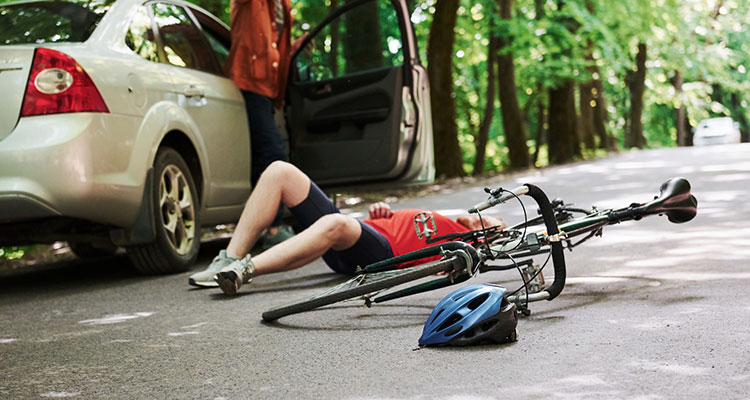 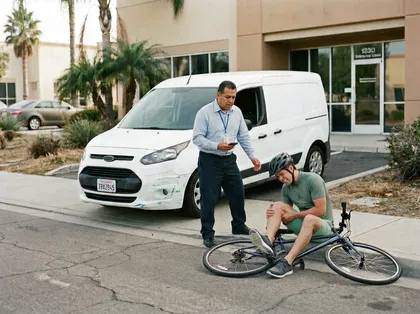 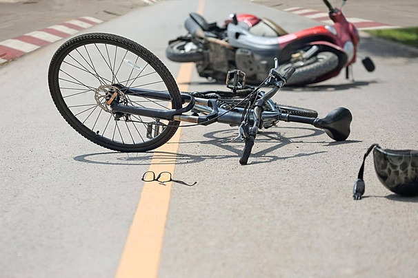 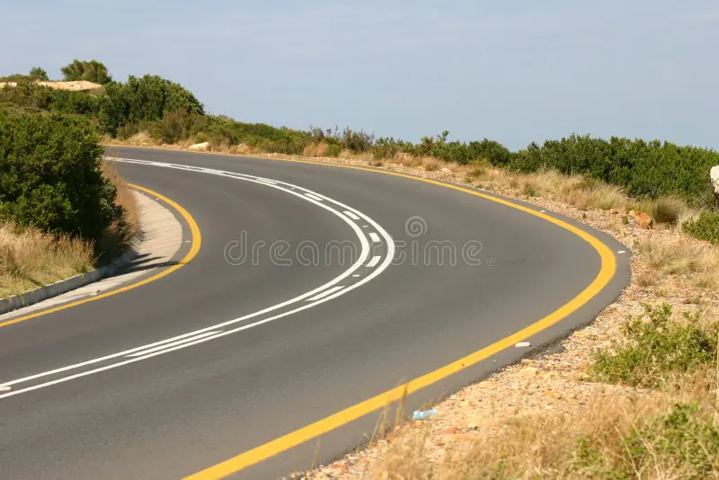 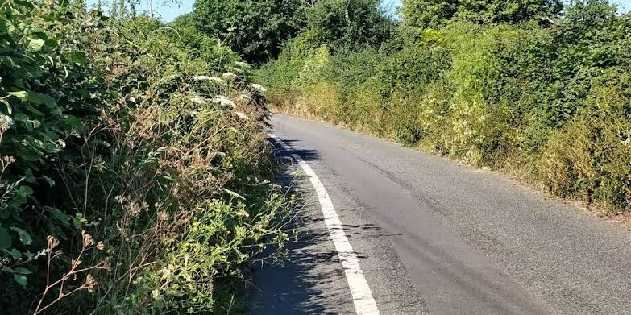
How important is a bike warranty? Can I still avail of service if I’ve lost the warranty document but still have the receipt? A bike warranty is important because it may cover manufacturing defects and certain faulty parts within a specific period. If you lose your warranty document, your receipt can serve as proof of purchase, so keep it in a safe place. You may still be eligible for warranty service, depending on the store’s policy, so contact them and provide your receipt and bike details. What is a good bike for daily commuting to work? Is it low-maintenance? A hybrid bike or mountain bike is suitable for daily commuting in the Philippines, especially on roads with uneven surfaces. Hybrid bikes are generally lightweight and comfortable for paved roads, while mountain bikes offer better handling on rough roads. Both can be low-maintenance if cleaned regularly, properly lubricated, and checked for worn-out parts. What are the different types of bikes, and how do their characteristics differ? Bicycles come in different types, each designed to specific purposes. Mountain bikes have wider, treaded tires and sturdy frames for rough roads, while road bikes are lightweight and designed for speed on paved surfaces. BMX bikes are smaller and built for tricks and stunts, while hybrid bikes combine features of road and mountain bikes for everyday use, and folding bikes are designed for convenient storage and transport. What type of bike is suitable for children aged 6 to 11? The most suitable bike depends on the child's height, leg length, and riding ability rather than age alone. Smaller children may use bikes with 16-inch or 20-inch wheels, while taller children may be ready for 24-inch wheels. Choose a bike that allows the child to reach the handlebars comfortably, control the breaks, and place their feet securely when stopping. In the event of a defect or damage to bike parts, how should I raise the concern—via email or a phone call? You can contact the seller or manufacturer through email, phone, or their official customer service channels. Email is useful for keeping a written record and attaching photos or videos of the defect, while a phone call can help you receive immediate instructions. Keep your receipt, warranty details, and purchase information ready when reporting the issue. How can I tell when bike parts, such as tires or brakes, need replacing? Check your tires for deep cracks, worn-out tread, bulges, or frequent air loss, as these may indicate that they need replacing. Brakes should be inspected if they feel weak, make unusual noises, or fail to stop the bike properly. Have worn or damaged parts checked by a qualified bike mechanic to help prevent accidents. What type of bike is budget-friendly and sustainable for students and working professionals? A basic mountain bike, hybrid bike, or single-speed bike can be a budget-friendly option for students and working professionals. Single-speed bikes have fewer moving parts, making them relatively simple and affordable to maintain, especially on flat roads. Choosing a durable frame, commonly available replacement parts, and a bike that suits your daily route can help reduce long-term expenses. Which helmet brands are durable enough for daily cycling? Brands such as Giro, Bell, Specialized, and Decathlon offer bicycle helmets for different budgets and riding needs. When choosing a helmet, prioritize a proper fit, comfort, ventilation, and recognized safety certification rather than the brand alone. Inspect your helmet regularly and replace it after a significant impact, even if there are no visible cracks. How often (in weeks or months) should the bike be cleaned to prevent rapid rusting and part deterioration? For regular use, clean your bike every two to four weeks, depending on how often and where you ride. If you cycle in the rain, through muddy areas, or on wet roads, rinse off dirt and dry the bike thoroughly as soon as possible to help prevent rust. Lubricate the chain when needed, and avoid using excessive water or spraying high-pressure water directly onto bearings and other sensitive parts. What is the validity period (in months or years) of the warranty for bike repairs? The warranty period depends on the bike manufacturer, seller, and type of repair or replacement part. Some warranties cover manufacturing defects for a specified period, while repair services may have a separate, shorter warranty or no additional coverage. Always ask for the warranty terms in writing, including its duration, coverage, exclusions, and whether it applies to labor, replacement parts, or both.
Accountable – Being responsible for one’s actions or decisions. Audible – Able to be heard or detected by the ears. Authorised Retailer – A seller or dealer officially approved by the manufacturer to sell, service, or handle warranty claims for the product. Axle-to-crown – The length of a fork from the wheel axle to the fork crown; it must not exceed the frame maker's limit. Bottom bracket – The bearing set in the frame shell that lets the crank turn. Bottom-Bracket Shell – The part of the frame that houses and supports the bottom-bracket assembly and crank rotation. Bruise – Damage to a tire caused by a strong impact or collision, which can weaken the tire. Caliper – A braking component that applies force to brake pads, which then create friction against a rim or disc rotor. Cassette – A group of rear sprockets mounted on the rear wheel hub that provides different gear ratios. Chainring – The toothed ring on the crank that drives the chain. Chainstay – The part of a bicycle frame that runs from the bottom-bracket area toward the rear wheel axle. Chainstays – Frame tubes that extend from the bottom-bracket area to the rear wheel axle and help transfer loads. Chromoly Steel – A strong and lightweight type of steel commonly used for bicycle components and frames. Composure – The ability to stay calm and controlled, especially in a difficult or dangerous situation. Components – Individual parts that make up a bicycle or another product. Convex – Having a surface that curves outward, allowing a wider field of view. Crankset – The two crank arms and the chainring(s). Cross-chaining – Running the chain on the largest ring and largest sprocket (or smallest and smallest). Defective – Having a fault, damage, or problem that prevents a product from working properly. Derailleur – A bicycle mechanism that moves the chain between different sprockets to change gears. Derailleur hanger – The small replaceable tab on the frame that holds the rear derailleur. Drivetrain – The bicycle components that transfer power from the rider’s pedaling to the rear wheel. Dropout – The slot in the frame or fork where a wheel axle sits. Dropper seatpost – A telescopic seatpost that lowers and raises the saddle from the handlebar. ETRTO – The size marking printed on tires and tubes (for example 40-622); use it to buy matching replacements. Fenders – Protective covers positioned over bicycle wheels to help block mud, water, and road debris. Head Tube – The front section of the bicycle frame that holds the steering components and connects the frame to the fork. Headset – A set of bearings and related components that allows the fork, handlebar, and steering system to rotate smoothly. High-denier Nylon – A strong, durable nylon fabric commonly used for bags and other outdoor equipment. Hitch Mechanism – A device used to securely connect a trailer, cart, or other attachment to a bicycle. Improper Use – Using a product incorrectly or in a way that is not intended or recommended by the manufacturer. Indexing – Adjusting shifter and cable so each click moves the chain exactly one sprocket. Junction – A place where two or more roads meet or cross. Laminated Polyester – Polyester fabric covered with an additional protective layer to improve its resistance to water and wear. Limit screws (H/L) – Screws that stop the derailleur from moving past the first or last sprocket. Overgrown – Describes plants, trees, or vegetation that have grown excessively and may block visibility or pathways. Pannier – A bag or container attached to the side of a bicycle rack for carrying items. Pneumatic – Operated or supported by air pressure, such as bicycle or cart wheels filled with air. Potential Hazard – A possible source of danger that could cause an accident or injury. Preload – The initial amount of pressure or tension applied to a component, such as headset bearings, to remove unwanted looseness. Puncture – A hole or damage in a tire caused by a sharp object. Quick link – A removable chain link used to open and close the chain. Rasps – Rough, abrasive tools used to remove or roughen material. Rigid Structural Frame – A strong bicycle frame designed to maintain its shape without built-in suspension movement. Rotor – The disc on the wheel hub that the disc-brake pads squeeze. Sag – How far a suspension fork compresses under the rider's weight at rest. Scuffers – Rough tools used to scrape or roughen a surface, particularly when preparing a tire for a repair patch. Seatstays – Frame tubes that extend toward the rear axle and provide structural support for the rear part of the bicycle frame. Shatter-resistant – Designed to resist breaking or scattering into pieces when struck or damaged. Situational Awareness – The ability to understand what is happening around you and recognize possible dangers. Standover height – Height of the top tube; the clearance when you stand over the bike. Statutory Warranty – A warranty required by law that provides buyers with certain protections for defective products. Steerer – The upper part of the bicycle fork that passes through the head tube and connects the fork to the steering assembly. Thru-axle – A threaded axle that passes through the fork and hub to hold the wheel. TPI – Threads per inch; describes the thread pitch. Torque – A twisting force applied when tightening or turning a fastener, usually measured to ensure that bicycle components are secured correctly. Also, the turning force on a bolt, measured in newton-metres (Nm). Toe overlap – The foot touching the front wheel when steering at low speed; a larger tire or longer crank can cause it. Tubeless – A tire system that operates without a separate inner tube, using an airtight seal between the tire and rim. Also, a tire and rim system that seals air without an inner tube. Vulcanizing – A process of treating rubber to make it stronger, more durable, and more resistant to heat and wear.
BikeMN. (2021, May 26). Safety equipment. Bicycle Alliance of Minnesota. https://www.bikemn.org/mn-bicycling-handbook/safety-equipment/ Cayabyab, M. J. (2020). MMDA: Employees return to work on bikes. The Philippine Star. Cruz, N. (2020). Two-wheeled transport. Manila Standard. Delgrossi, L. (2012). Vehicle safety communications: Protocols, security, and privacy. John Wiley & Sons. https://ils.pup.edu.ph/cgi-bin/koha/opac-detail.pl?biblionumber=55004 Denton, T. (2012). Advanced automotive fault diagnosis: Automotive technology: Vehicle maintenance and repair. Routledge. Gutierrez, D. (2022). Amid high fuel prices, JV Ejercito renews call for safer bike lanes. Philippine Daily Inquirer. Lowe’s transport manager’s and operator’s handbook 2023. (n.d.). Google Books. https://books.google.com.ph/books?id=i8CpEAAAQBAJ&pg=PA1&source=gbs_toc_r&cad=2#v=onepage&q&f=false Recreational Equipment, Inc. (n.d.). Bike trailer buying guide. https://www.rei.com/learn/expert-advice/bike-trailers.html BH Bikes. (2023). Spike user manual. https://www.bhbikes.com/download/bancorecursos/manuales/ENG/2023/2023_SPIKE_ENG_USER_MANUAL.pdf
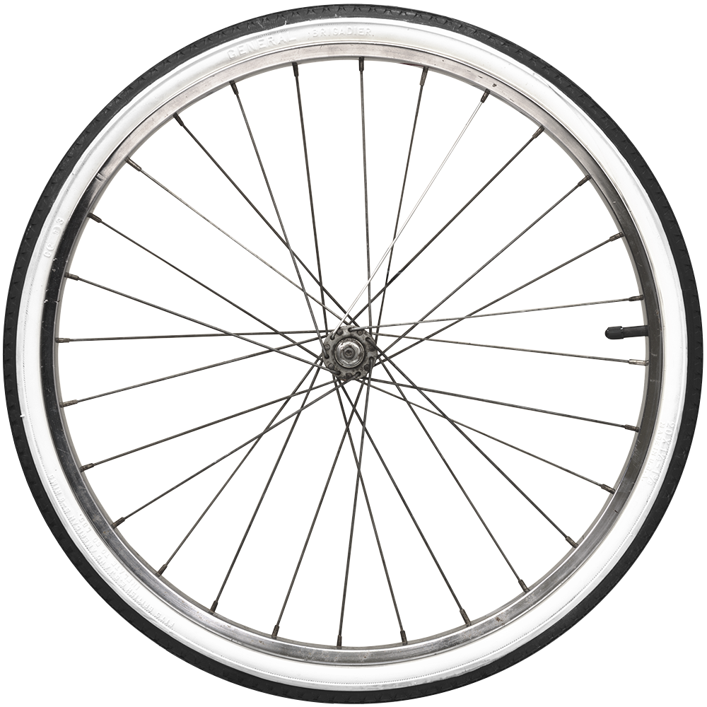